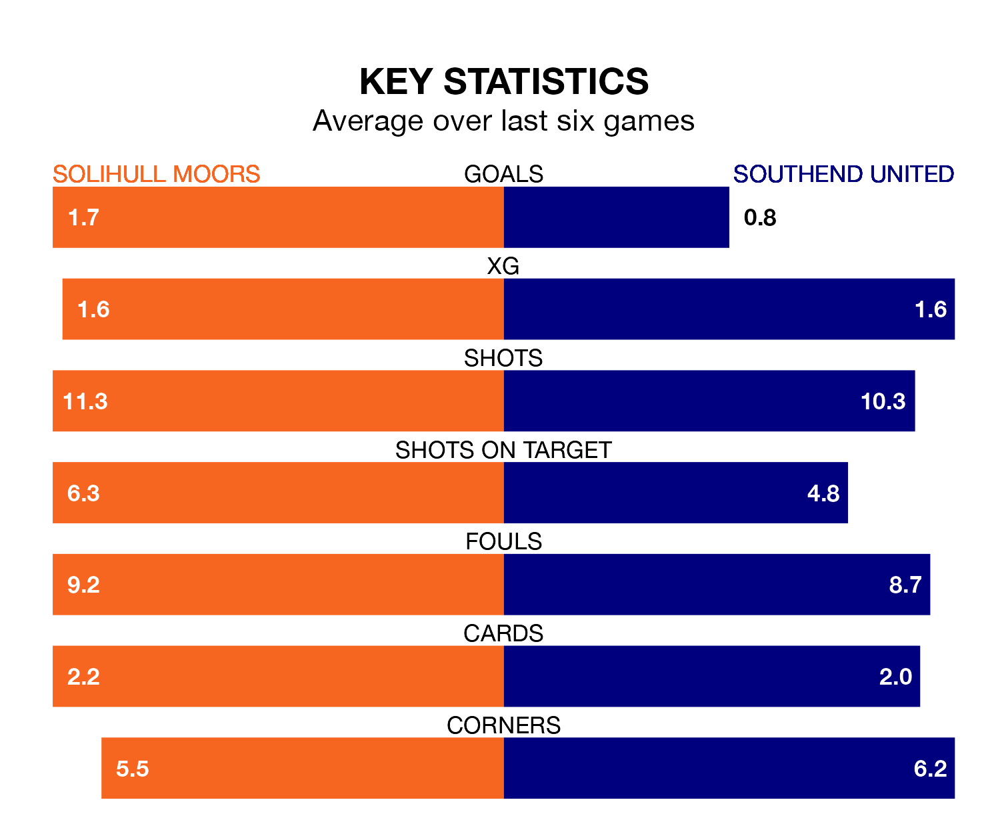

Southend United face Solihull Moors on Tuesday seeking to protect their formidable unbeaten run in the National League.
The Shrimpers are unbeaten in 10, with four wins and six draws, ahead of the 7.45pm kick-off.
They face a Solihull Moors team who have won five and drawn four over the same number of games.
Solihull Moors are fourth in the table after 40 games, of which they have won 18 and drawn 12, earning 66 points.
Southend are three places behind the Moors in seventh, with 17 wins and 11 draws putting them on 62 points.
With 64 goals in 40 games so far this season, the home team are scoring more than average in the league with 1.6 goals per game. And they are conceding fewer than average, letting in 54 goals at a rate of 1.4 per game.
United, meanwhile, are below average scorers, with 1.4 goals per game, compared to a league average of 1.5. They have conceded 1.0 goal per game.
In the last five years, Solihull Moors and Southend have played each other on five occasions. Solihull Moors won one of them, Southend two, and they drew twice.
On average, the Moors scored 0.8 goals and the Shrimpers 2.0 in those matches.
Their last meeting was on October 21, when Southend won 5-0 at home.
Solihull Moors's last match was on Saturday, a 1-1 draw against Aldershot Town, with Tahvon Campbell getting the goal for the Moors.
Southend drew 0-0 with Woking last time out, also on Saturday.
Updated: 12:16 (UTC), 25/03/24